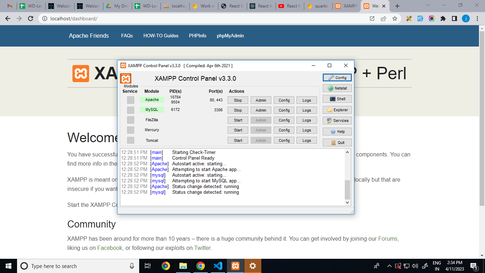

- for Download xampp Click here
- double Click on downloaded setp file and install it in ur drive
- now you have htdocs inside ur xampp folder where we are going to store all server side files
- xampp helps to execute/run our websire locally
- xampp X => cross plateform
- xampp A => Apache (Application server)
- xampp M => MariaDB (Database server)
- xampp P => PHP (Prog Lang)
- xampp P => Perl (Prog Lang)
- Stat XAMPP =>

- after enable service u can get Click for output
- Access phpmyadmin Open PHPmyAdmin